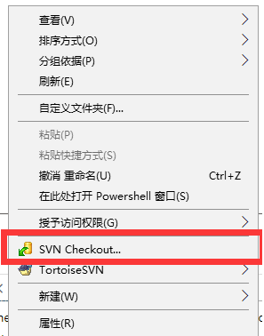
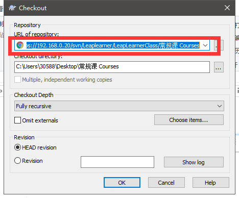
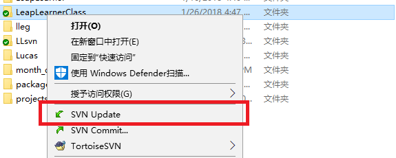
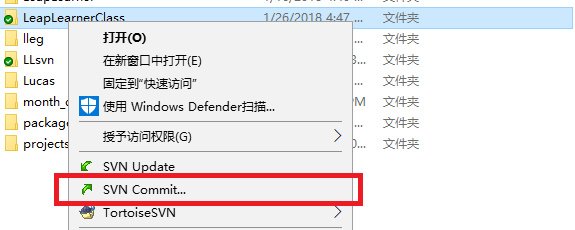
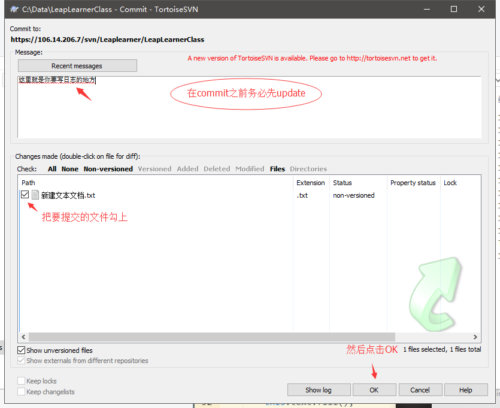

矩阵 Matrix¶
现在我们已经讨论了向量的全部内容，是时候看看矩阵了！简单来说矩阵就是一个矩形的数字、符号或表达式数组。矩阵中每一项叫做矩阵的元素(Element)。下面是一个2×3矩阵的例子：

矩阵可以通过(i, j)进行索引，i是行，j是列，这就是上面的矩阵叫做2×3矩阵的原因（3列2行，也叫做矩阵的维度(Dimension)）。这与你在索引2D图像时的(x, y)相反，获取4的索引是(2, 1)（第二行，第一列）。
矩阵基本也就是这些了，它就是一个矩形的数学表达式阵列。和向量一样，矩阵也有非常漂亮的数学属性。矩阵有几个运算，分别是：矩阵加法、减法和乘法。
矩阵的加减¶
矩阵与标量之间的加减定义如下：

标量值要加到矩阵的每一个元素上。矩阵与标量的减法也相似：

矩阵与矩阵之间的加减就是两个矩阵对应元素的加减运算，所以总体的规则和与标量运算是差不多的，只不过在相同索引下的元素才能进行运算。这也就是说加法和减法只对同维度的矩阵才是有定义的。一个3×2矩阵和一个2×3矩阵（或一个3×3矩阵与4×4矩阵）是不能进行加减的。我们看看两个2×2矩阵是怎样相加的：

矩阵的数乘¶
和矩阵与标量的加减一样，矩阵与标量之间的乘法也是矩阵的每一个元素分别乘以该标量。下面的例子展示了乘法的过程：

现在我们也就能明白为什么这些单独的数字要叫做标量(Scalar)了。简单来说，标量就是用它的值缩放(Scale)矩阵的所有元素。前面那个例子中，所有的元素都被放大了2倍。
到目前为止都还好，我们的例子都不复杂。不过矩阵与矩阵的乘法就不一样了。
矩阵相乘¶
矩阵之间的乘法不见得有多复杂，但的确很难让人适应。矩阵乘法基本上意味着遵照规定好的法则进行相乘。当然，相乘还有一些限制：
只有当左侧矩阵的列数与右侧矩阵的行数相等，两个矩阵才能相乘。 矩阵相乘不遵守交换律(Commutative)，也就是说A⋅B≠B⋅A。 我们先看一个两个2×2矩阵相乘的例子：
现在你可能会在想了：天哪，刚刚到底发生了什么? 矩阵的乘法是一系列乘法和加法组合的结果，它使用到了左侧矩阵的行和右侧矩阵的列。我们可以看下面的图片：

我们首先把左侧矩阵的行和右侧矩阵的列拿出来。这些挑出来行和列将决定我们该计算结果2x2矩阵的哪个输出值。如果取的是左矩阵的第一行，输出值就会出现在结果矩阵的第一行。接下来再取一列，如果我们取的是右矩阵的第一列，最终值则会出现在结果矩阵的第一列。这正是红框里的情况。如果想计算结果矩阵右下角的值，我们要用第一个矩阵的第二行和第二个矩阵的第二列。
计算一项的结果值的方式是先计算左侧矩阵对应行和右侧矩阵对应列的第一个元素之积，然后是第二个，第三个，第四个等等，然后把所有的乘积相加，这就是结果了。现在我们就能解释为什么左侧矩阵的列数必须和右侧矩阵的行数相等了，如果不相等这一步的运算就无法完成了！
结果矩阵的维度是(n, m)，n等于左侧矩阵的行数，m等于右侧矩阵的列数。
如果在脑子里想象出这一乘法有些困难，别担心。不断地动手计算，如果遇到困难再回头看这页的内容。随着时间流逝，矩阵乘法对你来说会变成很自然的事。
我们用一个更大的例子来结束对矩阵相乘的讨论。试着使用颜色来寻找规律。作为一个有用的练习，你可以试着自己解答一下这个乘法问题，再将你的结果和图中的这个进行对比（如果用笔计算，你很快就能掌握它们）。
可以看到，矩阵相乘非常繁琐而容易出错（这也是我们通常让计算机做这件事的原因），而且当矩阵变大以后很快就会出现问题。如果你仍然希望了解更多，或对矩阵的数学性质感到好奇，我强烈推荐你看看可汗学院的矩阵教程。
不管怎样，现在我们知道如何进行矩阵相乘了，我们可以开始学习好东西了。
矩阵与向量相乘¶
目前为止，通过这些教程我们已经相当了解向量了。我们用向量来表示位置，表示颜色，甚至是纹理坐标。让我们更深入了解一下向量，它其实就是一个N×1矩阵，N表示向量分量的个数（也叫N维(N-dimensional)向量）。如果你仔细思考一下就会明白。向量和矩阵一样都是一个数字序列，但它只有1列。那么，这个新的定义对我们有什么帮助呢？如果我们有一个M×N矩阵，我们可以用这个矩阵乘以我们的N×1向量，因为这个矩阵的列数等于向量的行数，所以它们就能相乘。
但是为什么我们会关心矩阵能否乘以一个向量？好吧，正巧，很多有趣的2D/3D变换都可以放在一个矩阵中，用这个矩阵乘以我们的向量将变换(Transform)这个向量。如果你仍然有些困惑，我们来看一些例子，你很快就能明白了。
单位矩阵¶
最简单的变换矩阵就是单位矩阵(Identity Matrix)。单位矩阵是一个除了对角线以外都是0的N×N矩阵。在下式中可以看到，这种变换矩阵使一个向量完全不变：
向量看起来完全没变。从乘法法则来看就很容易理解来：第一个结果元素是矩阵的第一行的每个元素乘以向量的每个对应元素。因为每行的元素除了第一个都是0，可得：1⋅1+0⋅2+0⋅3+0⋅4=1，向量的其他3个元素同理。